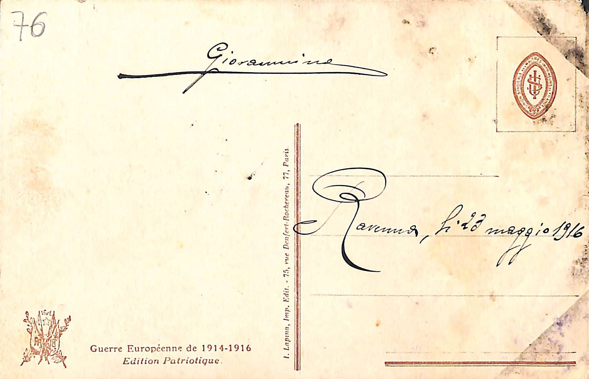
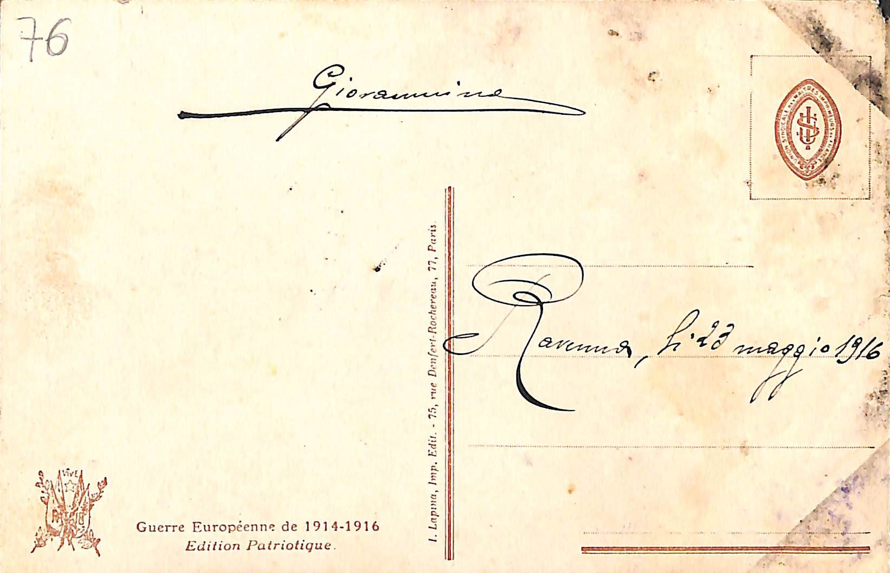
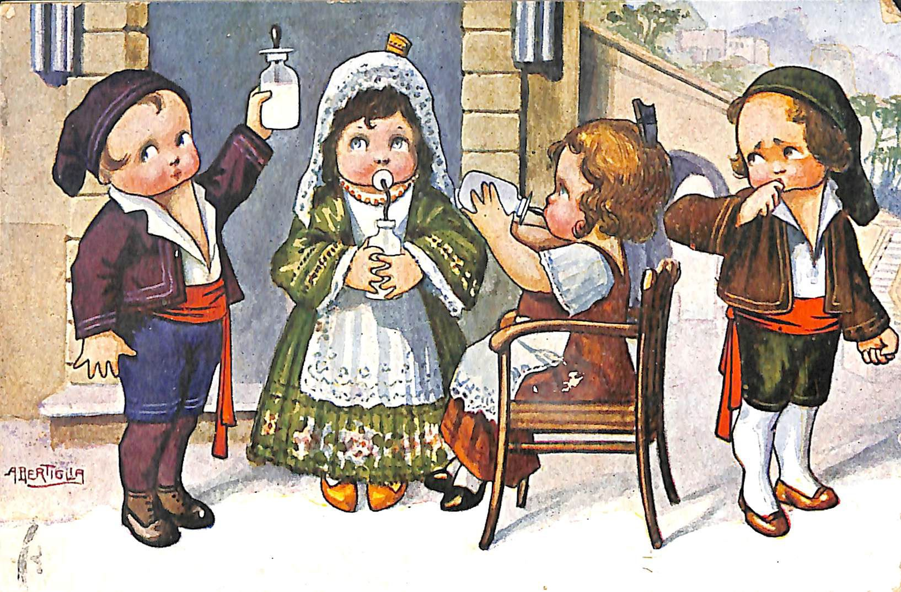
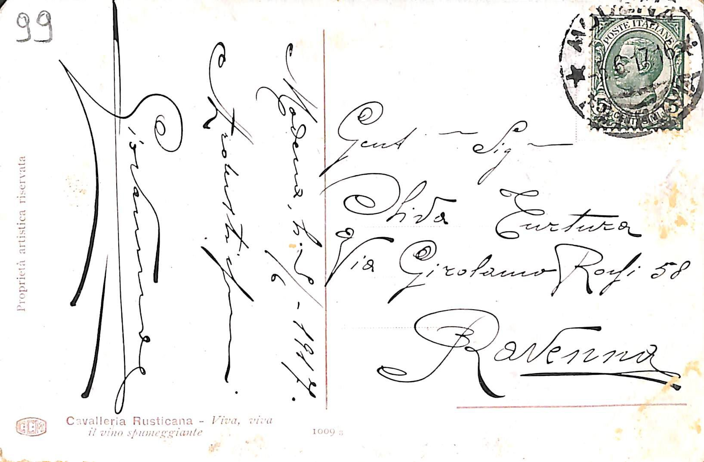

Corrispondenze
Devouement
 
DESCRIZIONE
Descrizione Immagine: Ritratto di crocerossina, sullo sfondo aperta campagna e cielo grigio
Nome Autore: Henry
Cognome Autore:Tenre
Nome mittente: Giovanni
Cognome mittente: Coliola
Luogo:
Tipo: città
Provincia: RV
Nazione: IT
Data: 23 maggio 1916
Deposito: Museo Civico Etnografico "Giovanni Podenzana", Sezione dei cimeli garibaldini e della Prima Guerrra Mondiale
codice identficativo: 7694_076_001/002
tipo: Cartolina Artistica
lingua: Italiano
materiale: Carta
stato di conservazione: Buono
Dimensioni: 9 X 14
Francobollo:assente
TESTO
Tipo: città
Provincia: RV
Nazione: IT
note aggiuntive:
Sul fronte riporta stampato titolo e nome dell' autore, sul retro “Guerre Europeenne 1914-1916, edition Patriotique” e “I.Lapina, Imp. Edit. - 75, rue Denfert-Rochereau, 77 Paris”, H. Tenre autore dell' operaBambini che bevono latte
DESCRIZIONE
Descrizione Immagine: Bambini in strada che stanno bevendo del latte
Luogo mittente:
Tipo:
Provincia: MO
Nazione: IT
Luogo destinatario:
Tipo: città
Provincia: RV
Nazione: IT
Data: 09/06/1917
Autore: Giovanni Coliola
Destinatario: Oliva Turtura
Deposito: Museo Civico Etnografico "Giovanni Podenzana", Sezione dei cimeli garibaldini e della Prima Guerrra Mondiale
codice identficativo: 7694_099_001/002
tipo: Cartolina Artistica
lingua: Italiano
materiale: Carta
stato di conservazione: Buono
Bolli: francobollo da 5 centesimi del Regno d'Italia
TESTO
Bollo: francobollo da 5 centesimi del Regno d'Italia, MODENA FERROVIA, 05/06/1916
Gent,Sig na
OlivaTurtura
Via Girolamo Rossi 58
Ravenna
ardentissimo
Giovannino
note aggiuntive: Sul retro troviamo la stampa "CAVALLERIA RUSTICANA - Viva, viva il vino spumeggiante"